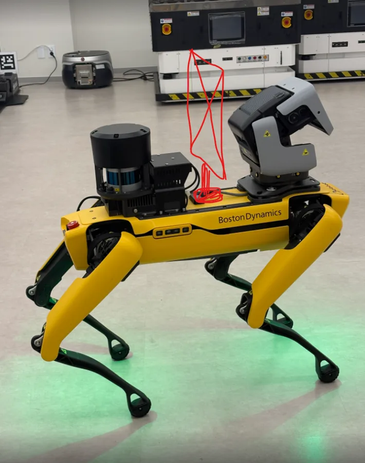
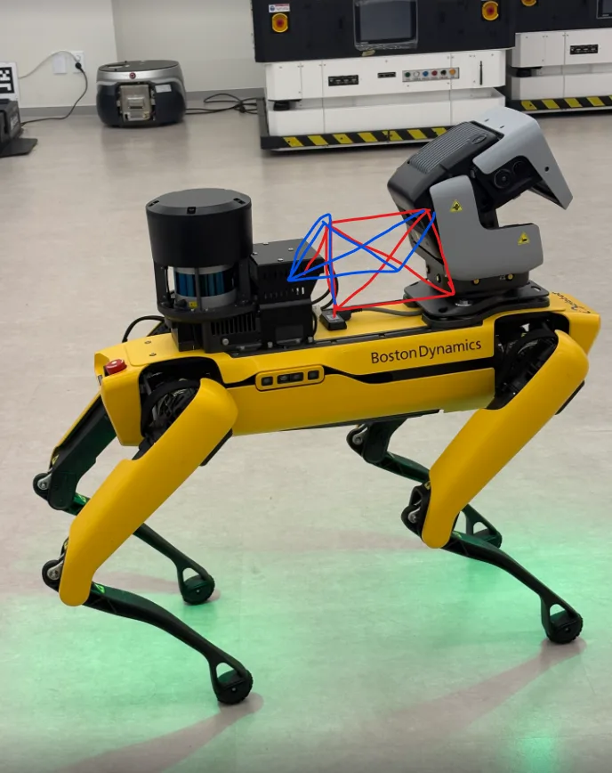
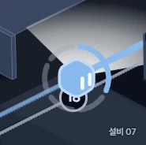

Research · Robot Display
로봇 디스플레이
로봇개 등 위 7인치 디스플레이의 리서치와 방향성. 기준은 Figma KISTA-2026 · 06 시나리오(8장면) · 2026-10-23
1. 역할
사람과 마주쳤을 때 안내하고, 로봇 상태를 알린다. 안내판을 넘어 브랜딩 · 인터랙션까지.
- 브랜딩마주침이 드물어 한 번의 인상이 곧 제품의 얼굴
- 신호 체계화면 혼자가 아니라 상태등 · 바닥 투사 · 소리 · 몸짓과 함께
2. 하드웨어
| 항목 | 값 | 디자인에 주는 뜻 |
|---|---|---|
| 패널 | 7인치 정전식 터치 · Raspberry Pi DSI | 터치는 끈다 · 화면은 Pi 가 그린다 |
| 보이는 화면 | 155 × 86 mm | 세로 86mm 가 줄 수를 정한다 |
| 해상도 | 800 × 480 (약 130ppi) | 가는 선 · 작은 아이콘 금지, 굵은 획 |
| 방폭 | 필요 없는 것으로 봄(확실치 않음) | 방폭구역이면 패널부터 다시 |
| 터치 | 쓰지 않음 | 물방울 · 장갑 오입력 방지. 회수 화면은 담당자 단말로 |
거리별 글자 크기
3m 에서 한 줄 6자. 지금 시나리오 문구(26자 안팎)는 1m 안에서만 읽힌다.
| 거리 | 화면 글자 | 한 줄 | 담을 것 |
|---|---|---|---|
| 5m 이상 | 약 230px | 3~4자 | 기호 하나 — 실제로는 빛 · 투사가 맡는다 |
| 3m | 약 140px | 약 6자 | 아이콘 + 한 줄 |
| 1.5m | 약 70px | 약 11자 | 이유 + 요청 두 줄 |
잠시 기다려 주세요
기준: 사인 업계 경험칙 "3m 에 글자 높이 약 2.5cm" · 한글은 폭 ≈ 높이
장착 안 — 미확정


A형 우선. 화면을 읽는 1.5~2m 안에서 사람은 대부분 로봇 옆을 지나간다.
먼저 확인 두 안 모두 라이다(뒤)와 PTZ 카메라(앞) 사이 — 라이다 앞 시야(아래 경계 약 -15°)와 PTZ 의 뒤쪽 회전을 가리면 안 된다.
| 항목 | 세로형 | A형 |
|---|---|---|
| 보이는 방향 | 한 방향 | 양옆 · 위로 기울어 내려다보기 좋음 |
| 맡는 장면 | 정면 — 2 다가올 때 · 4 안전모 · 8 계단 | 옆 — 1 · 2 지나갈 때 · 3 · 5 · 6 · 7 |
| 글자 | 세로로 세우면 3m 3자 · 가로로 세워야 6자 | 6자 / 11자 그대로 |
| 계단 | 오를 때 화면이 위를 향함 | 위 · 아래에서는 모서리만 |
| 센서 가림 · 넘어짐 | 높아서 불리 | 낮게 잡을 수 있음 |
- A형 기울기수직에서 30~40°(옆 1.5m 시선 약 34°)
- 화살표화면마다 좌우를 뒤집는다 · 문구는 같게
- 두 화면같은 박자로 · Pi 5 한 대 구동은 개발 확인
- 정면상태등 · 투사가 맡는다 · 필요하면 멈춘 뒤 몸을 살짝 튼다
- 시야밝기 · 시야각은 실물로(직사광 대응은 보통 1,000nit 이상)
- 그리기블러 · 넓은 글로우 금지, 단색 벡터 · 런타임은 실기기 프레임 측정 후
3. 시나리오 짚을 점
| 문제 | 지금 | 제안 |
|---|---|---|
| 색의 뜻이 제각각 | 평상시 "파랑 or 초록", 계단에 빨강, 흰색 · 하늘색 혼재 | 위험도 4단계로 통일(5-①) |
| 화면 = 음성 | 같은 문장을 두 번 | 채널별 역할 분담(4) |
| 사람이 답할 수 없음 | "먼저 지나가세요" 일방 | 몸짓 · 지나감 감지(4) |
| 꺼지면 말이 없음 | 7-5 off 이후 | 물리 라벨 · e-paper |
| 터치 UI | 7 회수 화면, 5-3-2 버튼 | 담당자 단말로 |
| 메시지 겹침 규칙 없음 | 배터리 부족 중 사람 만남 등 | 위험 > 사람 > 로봇 > 평상시 |
4. 고려 요소
채널 역할
| 채널 | 맡는 것 | 거리 |
|---|---|---|
| 바닥 투사 | 어디로 · 어디까지 | 멀리 |
| 상태등 | 지금 상태 — 색 · 점멸 | 멀리 · 360° |
| 디스플레이 | 왜 · 무엇을 해 달라 | 가까이 |
| 소리 · 음성 | 주의 끌기, 문장은 짧게 | 소음이면 안 들림 |
| 몸짓 | 멈춤 · 양보 · 출발 | 멀리 |
요소
| 영역 | 요소 |
|---|---|
| 물리 | 보행 진동 걷는 중엔 문장 · 흐르는 글자 금지 · 앞뒤 화면 · 빛이 "내 앞" 표시 · 환경 분진 · 물기 · 반사 |
| 정보 | 한 화면 = 한 상태 + 한 요청(읽는 시간 1~2초) · 픽토그램 먼저(외국인 근로자 14.7%) · 안전색 ISO 파랑 = 지시 · 색각 기호(ⓧ △ ✓) · 점멸 병행 |
| 인터랙션 | "봤어요" 감지한 사람 쪽으로 반응 · 몸짓 = 화면 어긋나면 믿지 않음 · 사람의 답 손 들기 · 지나감 감지, 시간 제한 · 박자 숫자 · 투사 · 소리 동기 |
| 브랜딩 | 시그니처 대기 모션 · 기립 시퀀스 · 효과음 · 투사 패턴 · 이름 "05번 로봇" · 관제와 같은 언어 |
| 운영 · 규정 | 촬영 표시 개인정보보호법 제25조의2(법무 확인) · 경보 피로 반복 마주침엔 소리 줄임 · 꺼진 상태 · 절전 · 연결 끊김 |
5. 방향성
① 상태 문법 — 관제와 같은 위험도 4단계
| 단계 | 색 | 빛 | 화면 | 예 |
|---|---|---|---|---|
| default | 초록(Spot 관례), 낮은 밝기 | 켜짐 | 이름 · 할 일 · 캐릭터 | 순회 · 충전 |
| 안전 · 정보 | 파랑 · 완료는 초록 짧게 | 느린 숨 | 아이콘 + 짧은 요청 | 사람 마주침 · 계단 |
| 주의 | 노랑 | 느린 점멸 | △ + 이유 + 요청 | 안전모 · 이상 음향 · 배터리 |
| 위험 | 빨강 — 위험에만 | 빠른 점멸(1초 3번 미만) | 표준 표지 하나 | 배관 이상 · 복귀 불가 |
- 계단 빨강안전 · 정보나 주의로 옮긴다
- 흰빛신호가 아니라 작업등(Spot 도 흰색 = 점검)
② 거리 3단계
멀리 = 빛 · 투사 · 3m = 아이콘 + 6자 · 1.5m = 이유 + 요청 11자
③ 얼굴 없이, 위험할수록 표지로
화면에 얼굴(눈 · 입)을 그리지 않는다. 위험도가 오를수록 캐릭터 → 아이콘 → 표준 표지로 모핑한다.
- 왜 얼굴이 아닌가PTZ 카메라가 이미 머리 — 얼굴을 더하면 머리 둘(A형이면 셋)
- 캐릭터프리즘 AI 오브(관제 AI 와 같은 존재) — 아래 정육면체 안이 확정되면 대신한다
- "봤어요"캐릭터가 사람 쪽으로 다가가거나 밝아진다 · PTZ 를 돌리는 안은 점검 제약 · 찍히는 느낌 확인
- 성능관제용 오브는 무겁다 — 로봇용 단순 버전 필요
검토 중인 안 · 2026-10-23 · 확정 전
정육면체 슬라임 — 지도 아이콘 · Delta · 로봇 디스플레이를 한 꼴로

| 쓰임 | 꼴 | 상태를 말하는 것 |
|---|---|---|
| 지도 로봇 | 정육면체 + 눈 | 바깥 고리 또는 몸 색 |
| Delta | 정육면체, 눈 없음 | 색 — 위험도 |
| 로봇 디스플레이 | 정육면체, 눈 없음 | 움직임 · 모핑 |
- 좋은 점얼굴이 아님 · 앞면이 펴져 표지가 됨 · 말랑함 = 움직임 언어 · 블러 없이 그림 · 프리즘과 이어짐
- 정할 것눈 규칙(디스플레이는 눈 없이 제안) · 지도 방향 표시 · 작은 크기 · 몸 색 vs 고리 · 위험 땐 출렁임 멈춤 · A형 좌우 대칭
④ 짧은 대화 리듬
봤어요 → 기다릴게요 → 고마워요 — 터치 없이 몸짓과 감지만으로 닫히는 세 박자를 시그니처 경험으로.
6. 만들 화면
시나리오 문구 40개 가까이 → 화면 31개 → 틀 8개. 틀을 먼저 만들고 문구 · 아이콘만 바꿔 끼운다.
| 틀 | 위험도 | 구성 | 머무는 시간 |
|---|---|---|---|
| T1 상태 | default | 상태 한 줄 + 층 · 작업 · 다음 지점 · 캐릭터 | 계속 |
| T2 예고 · 진행 | 안전 · 정보 | 동작 아이콘 + 카운트다운 · 진행 | 동작 끝까지 |
| T3 사람 안내 | 안전 · 정보 | "봤어요" + 양보 요청 | 지나갈 때까지 |
| T4 요청 | 주의 | 지시 표지(파란 원) + 요청 | 확인될 때까지 |
| T5 이상 · 확인 중 | 주의 | △ + 무엇을 확인 + 진행 | 판단 날 때까지 |
| T6 경고 | 위험 | 표준 표지 + 두세 글자 | 관제 해제까지 |
| T7 완료 | 안전 · 정보 | ✓ + 한 줄 | 2~3초 → T1 |
| T8 연결 · 가이드 | 주의 | 관제 음성 연결 · 단계 안내 | 끝날 때까지 |
틀별 화면 예시
세로는 너비 86mm — 3m 에서 한 줄 약 3자라 문구가 두 줄로 쌓인다 · 도형과 글자만 · 주 문구 70~120px · 보조 26~36px · 위쪽 상태 줄 24px · 아래 띠 = 몸체 상태등 색
왼쪽 정육면체는 캐릭터 자리(정육면체 · 오브 미정)
고리가 줄어들며 3 → 2 → 1. 계단 · 복귀 예고도 같은 틀
사람을 감싼 고리 = "봤어요". 다가오는 쪽으로 고리가 돈다
표지는 ISO 지시(파란 원). 단계는 주의라 아래 띠는 노랑
진행 막대가 있으면 "언제 끝나나"가 보인다
상태 줄 · 캐릭터 없이 표지와 두 글자만. 글자는 3m 기준(약 120px)
2~3초 머문 뒤 T1 로
가이드(7-4 회수 순서)는 같은 자리에 단계 번호 1 → 4 가 차례로
유형별 화면 31개 — 시나리오 장면 대응
| 유형 | 화면 | 틀 | 시나리오 |
|---|---|---|---|
| 평상시 | 대기 · 배터리 잔량 | T1 | 1-1 |
| 미션 수행 중 (층 · 작업명) | T1 | 2-1 | |
| 이동 중 (다음 웨이포인트) | T1 | 2-5 | |
| 충전 중 · 잔량 | T1 | 6-5 | |
| 동작 예고 · 진행 | 기립 예고 3-2-1 → 기립 중 | T2 | 1-3, 1-4 |
| 계단 진입 예고 · 대기 요청 | T2 | 8-1 | |
| 계단 이동 중 → 벗어나는 중 | T2 | 8-2, 8-3, 8-4 | |
| 충전소 복귀 예고 · "경로를 비워 주세요" → 복귀 중 | T2 | 6-3, 6-4 | |
| 이동 재개 | T2 | 2-4, 3-5, 4-4, 5-4 | |
| 사람 안내 | 주변 확인 중 · 사람 감지 | T3 | 1-2, 2-2 |
| 정지 · "지나가 주세요" | T3 | 2-3 | |
| 통행 확인 중 | T3 | 2-4 | |
| 요청 | 안전모 미착용 감지 | T4 | 4-1 |
| 안전모 착용 요청 | T4 | 4-2 | |
| 점검 · 이상 감지 | 판독 중 · 이상 징후 확인 중 | T5 | 3-1, 5-1 |
| 이상 음향 감지 · 관제 확인 대기 | T5 | 5-2 | |
| 재측정 중 (진행 표시) | T5 | 5-3 | |
| 현장 점검 요청 (설비명 · 감지 시각 · 위치) | T5 | 5-3-2 | |
| 로봇 이상 | 배터리 부족 · 잔량 | T5 | 6-1 |
| 복귀 가능 · 관제 지시 대기 | T5 | 6-2 | |
| 자율 복귀 불가 · 회수 대기 | T6 | 7-1, 7-2 | |
| 위험 · 접근 금지 | 이상 감지 · 접근 금지 | T6 | 3-2 |
| 위험 확인 · 접근 금지 | T6 | 3-3 | |
| 회수 대기 · 만지지 마세요 | T6 | 7-3 | |
| 관제 연결 · 안내 | 관제실 음성 연결 중 | T8 | 4-3-2 |
| 회수 순서 안내 (준비 → 전원 종료 → 운반 → 인계) | T8 | 7-4 | |
| 완료 · 해제 | 기립 완료 · 미션 시작 | T7 | 1-5 |
| 안전모 착용 확인 | T7 | 4-3 | |
| 안전 조치 완료 | T7 | 3-5 | |
| 계단 이동 완료 | T7 | 8-5 |
- 시나리오 밖부팅 · 브랜드 · 통신 끊김 · 비상정지(E-STOP = 위험) · 종료 중 · 절전 · "고마워요"
- 터치 제거5-3-2 버튼 · 7-3 가이드 버튼 · 7-5 회수 태블릿 → 담당자 단말
7. 사례와 논문
산업용 4족 로봇에 작업자용 화면을 단 사례는 거의 없다. 산업용은 빛 · 소리, 화면은 반려 · 연구용뿐 — 선례가 적은 만큼 차별점이 될 자리.
| 사례 | 화면 · 신호 | 우리에게 |
|---|---|---|
| Boston Dynamics Spot | 화면 없음 · 안전등 초록 = 정상, 흰색 = 점검, 호박색 = 주의 | 색 관례를 맞춘다 |
| Dr. Spot (MIT, 2020) | 등에 iPad — 원격 의료진 얼굴 | 관제 연결 때 사람의 존재 보여주기 |
| Sony aibo (2018) | OLED 눈 두 개, 몸짓과 함께 | 눈과 몸짓은 같이 움직인다 |
| Mini Pupper | 320×240 LCD 얼굴 · Raspberry Pi | 같은 구성의 성능 기준점 |
| Xiaomi CyberDog 2 | 몸통 E Ink — 색이 바뀌는 외장 | 몸이 곧 브랜드 표면 |
| 현대차 공장 안전 로봇 | 감지 · 관제 중심, 작업자 화면 없음 | 국내도 현장 소통은 빈자리 |
논문 13편 — 한 줄 요약
| 논문 | 결과 → 우리에게 |
|---|---|
| Kalegina, HRI 2018 | 화면 얼굴 157종 분석 — 산업용은 단순한 얼굴 |
| Broadbent, 2013 | 사람 같은 얼굴일수록 마음이 있다고 느낌 → 기대치도 오름 |
| 평면 얼굴 시선, 2022 | 화면 얼굴로 "보고 있다" 높이기 → "봤어요" 신호 |
| 실물 vs 화면 얼굴 | 시선은 2D 화면에서 덜 읽힘 → 몸 방향 · 빛과 함께 |
| Speaking with Screens, HRI 2026 읽을 것 | 정보용 로봇 화면 설계 지침 — 가장 가까운 주제 |
| Go2 + 모니터, 2025 | 표정 · 음성으로 신뢰 회복 → 배터리 · 회수 같은 실패 순간 |
| 4족 근접 거리 (N=32) | 향한 방향 · 시선이 거리에 영향 → 화면 방향도 신호 |
| Safe Spot, 2024 | 순한 몸짓이 더 안전 → "멈추고 양보" |
| 개 같은 몸짓, HICSS 2024 | 인상 평가 전 항목 상승 (222명) |
| MIT Media Lab, 2026 | 몸짓 · 빛 · 텍스트 · 소리 비교, 어긋나는 신호 시험 |
| Shin, 2024 (Go1) | 말보다 손 · 몸 제스처 선호 → 터치 없는 답 |
| 배달 로봇 외부 표시 (152명) | 화면 선호, 빛은 보조일 때 최선 |
| 바닥 투사 (바퀴 로봇) | 경로 투사 → 예측 가능 · 4족 연구는 없음 |
출처 — 리서치 13 · 사례와 논문 16
- eHMI: Review and Guidelines for Deployment on Autonomous Vehicles (Carmona et al., 2021)
- Principles for External Human–Machine Interfaces — 17 heuristics (2023)
- External HMI on Delivery Robots: Expression of Navigation Intent (Kannan, Lee, Min) — 디스플레이 선호, 빛은 보조 신호
- Facial Features Integration in Last Mile Delivery Robots
- Do Robots Need Body Language? (MIT Media Lab, 2026)
- Expressive movement improves pedestrians' impressions of a quadruped service robot
- Communicating Directionality in Flying Robots (Szafir, Mutlu, Fong, 2015)
- Serve delivery robot — New Deal Design × Postmates (Dezeen)
- Delivery robot design report (Core77) — 과한 의인화의 위험
- ANYmal X — Ex-proof legged robot (ANYbotics)
- 건설근로자공제회 '건설현장 리포트' — 외국인 근로자 14.7%
- 정부, 외국인노동자 위한 다국어 안전표지 제작 (2025)
- Sunlight readable displays (Faytech) — 밝기 기준
7. 사례와 논문
- Spot 안전등 · 소리 패턴 (Equipment Journal) · Techeblog
- Dr. Spot (NPR) · IEEE Spectrum · Freethink
- aibo ERS-1000 (Interesting Engineering) · Robotsguide
- Mini Pupper (CNX Software)
- CyberDog 2 E Ink Prism (Good e-Reader)
- 현대차그룹 공장 안전 서비스 로봇 (테크42)
- Characterizing the Design Space of Rendered Robot Faces (Kalegina et al., HRI 2018)
- Robots with Display Screens (Broadbent et al., PLoS ONE 2013)
- Eye-Gaze Contact from an Iconic Face on a Flat Screen (Sensors 2022)
- Role of Embodiment and Presence in Human Perception of Robots' Facial Cues
- Speaking with Screens (Kim, Lee, Mutlu, HRI 2026) — 읽을 것
- Robot Facial-Audio Expressions and Trust Repair (Unitree Go2, arXiv 2512.13981)
- Dynamic Proxemics with Four-Legged Canine-Inspired Robots
- Safe Spot: dominant vs submissive appearances (arXiv 2403.05400)
- Non-verbal Interaction with a Quadruped using Body and Hand Gestures (Shin et al., 2024)
- Projecting Robot Navigation Paths (arXiv 2112.05172)